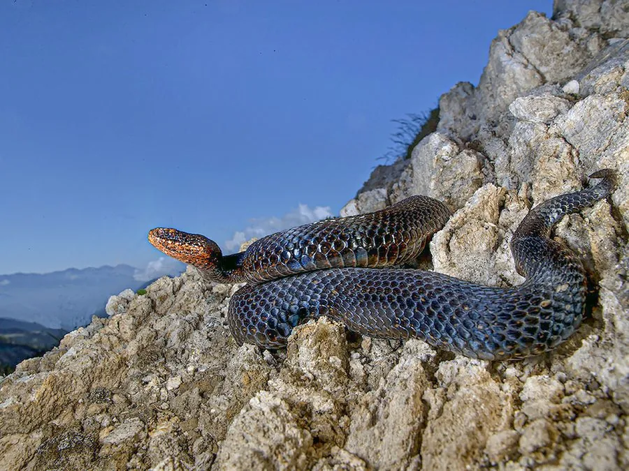

爬行动物 · 动物界
极北蝰 Vipera berus

分布最北的毒蛇之一，身体较粗短，背部有锯齿状深色纵纹，毒性一般为中等，被咬仍须及时就医并观察全身症状。
- 分类
- 门脊索动物门纲爬行纲目有鳞目科蝰科属蝰属
- 栖息环境
- 欧洲与亚洲北部的森林、沼泽、草地、石堆与山地
- 地理分布
- 欧洲和亚洲北部，中国东北、新疆有分布
- 保护级别
- IUCN 无危（LC）；中国未列入国家重点保护名录
物种志
极北蝰体长 50–70 厘米，雌蛇略大于雄蛇，身体较粗短，头部略呈三角形，吻端圆钝；体色变化较大，雄性多呈灰白或银灰色，雌性偏褐，背部有一条锯齿状的深色纵纹，体侧有深色斑点，腹部灰黑并带浅色斑驳。它是分布最靠北的毒蛇之一。
它分布于欧洲和亚洲北部的森林、沼泽、草地与山地，在中国见于东北和新疆的部分地区，多在白天活动，捕食鼠类、蛙类、蜥蜴和昆虫。它是卵胎生蛇类，雌蛇妊娠约 3–4 个月后产下 5–15 条幼蛇。极北蝰毒性一般为中等，被咬后局部会肿胀疼痛，少数人可能出现全身症状，须及时就医；它性情胆小，受到惊扰时多迅速逃走，野外活动时注意脚下和草丛即可。
形态与习性
- 食性鼠类、蛙类、蜥蜴和昆虫
- 体长50–70 cm，雌蛇较大
- 寿命约 10–15 年
- 繁殖卵胎生，妊娠 3–4 个月，每胎 5–15 条
- 活动节律白天活动，冬季进入休眠
- 毒性毒性中等，被咬须及时就医
趣味知识
- 极北蝰是分布最北的毒蛇之一，能在寒冷地区生存。
- 它的背部有一条锯齿状深色纵纹，是重要的识别特征。
- 极北蝰性情胆小，遇到人多会迅速逃离。